MC Mosaic Studio
Creating Art, Piece by Piece
MC Mosaic Studio designs and builds custom mosaic pathways, lawn address signs, pet memorial pieces, and artistic garden features for homeowners who want a more distinctive outdoor space in Coquitlam and the Greater Vancouver area.
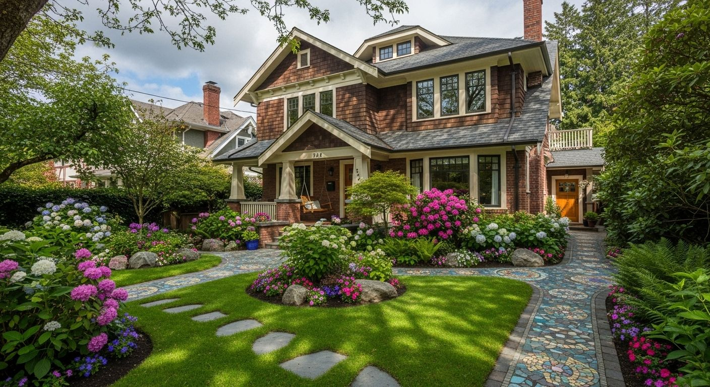
This makes it clear that the studio is local, service-based, and focused on custom outdoor work for nearby homeowners rather than mass-market products.
Custom pathways, address signs, garden features, and memorial work.
Outdoor art details that add character and a stronger sense of place.
Distinctive front yard and backyard features for design-conscious homeowners.
Select custom commissions for homeowners looking for one-of-a-kind outdoor work.
This section quickly tells visitors why your work feels more custom, artistic, and memorable than off-the-shelf options.
Each project is designed to feel personal, memorable, and visually integrated with the home and garden.
Artistic walkways that turn a simple entrance or garden path into a standout feature.
Custom curb-appeal pieces that combine mosaic, wood, stone, and modern outdoor styling.
Backyard accents, decorative focal points, outdoor tables, and feature installations.
Thoughtful stepping stones, markers, and memorial garden pieces created with warmth and care.
This layout is written and designed to feel closer to a premium local design studio than a generic contractor website.
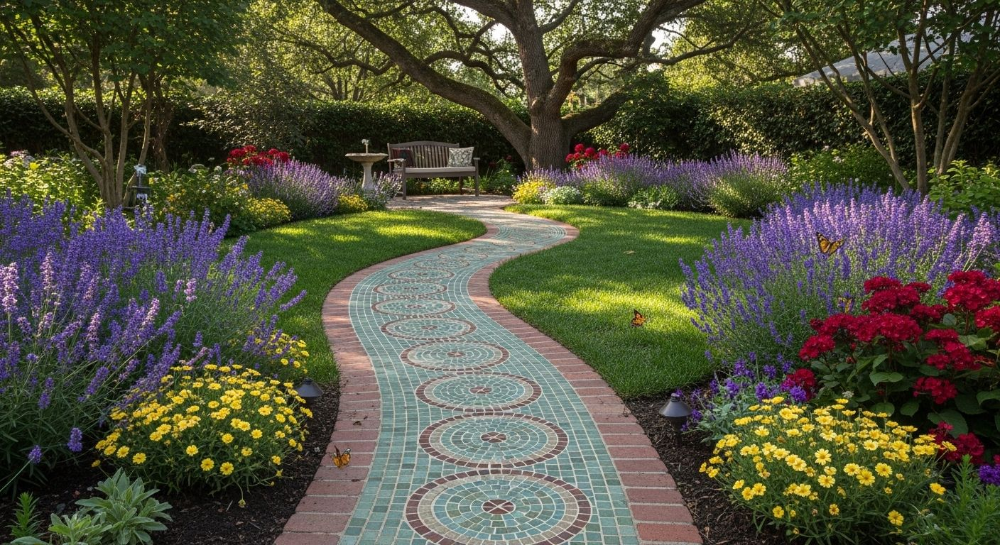
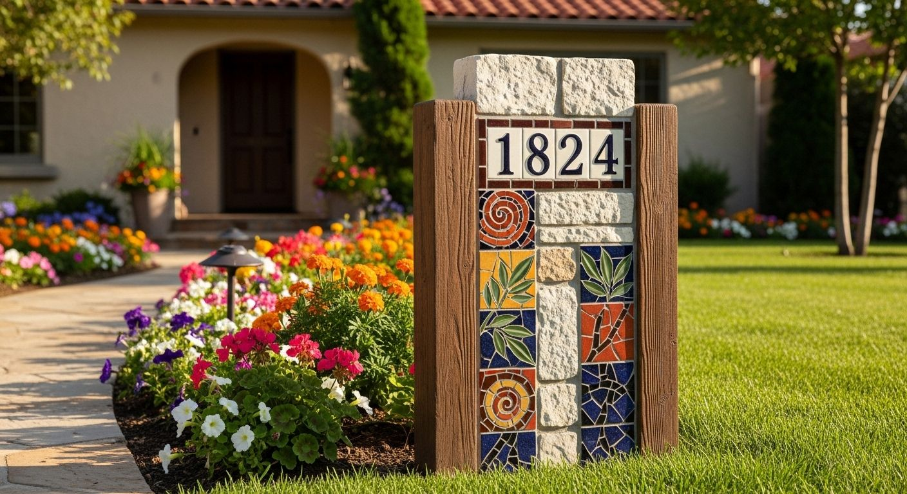
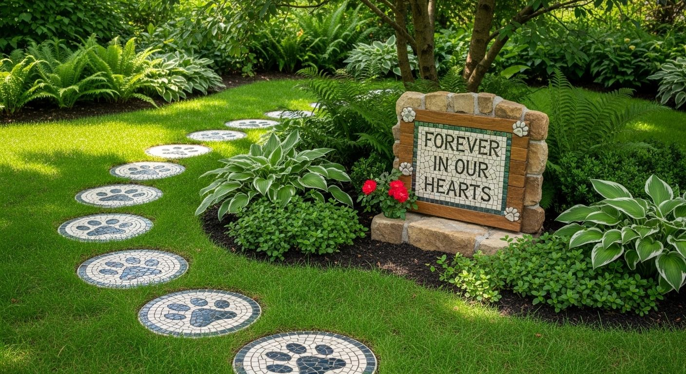
This section adds a stronger design-studio feel and helps future clients imagine the transformation potential of their own property.
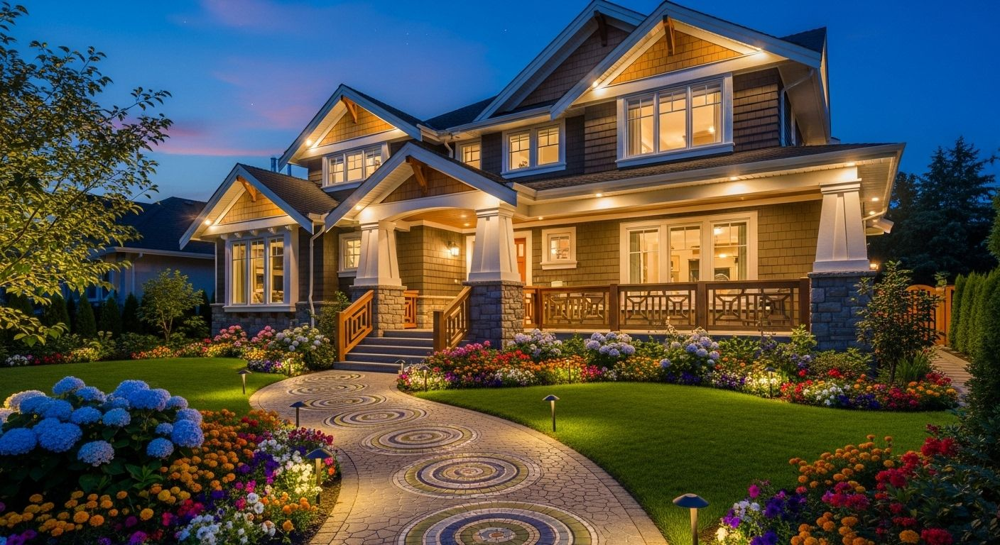
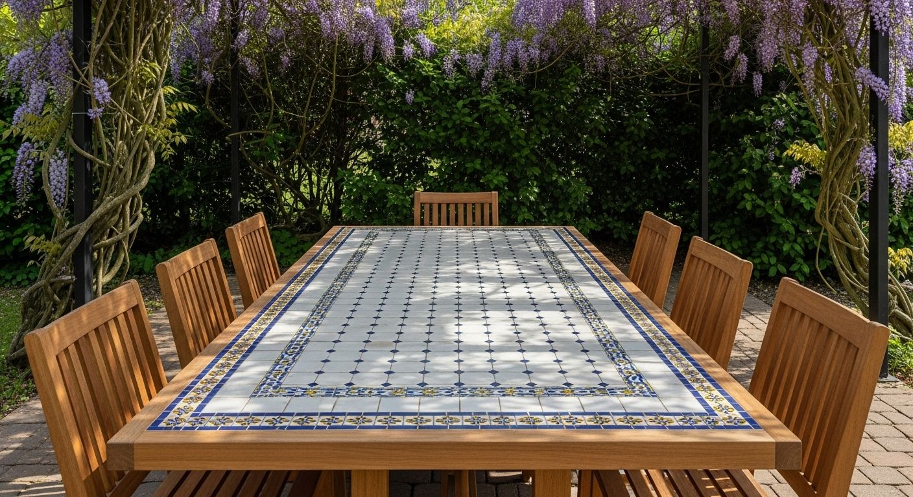
This gives visitors a clearer way to browse your work by category, even before building a separate gallery page later.
Use this section to show range, quality, and the overall design direction of your studio.
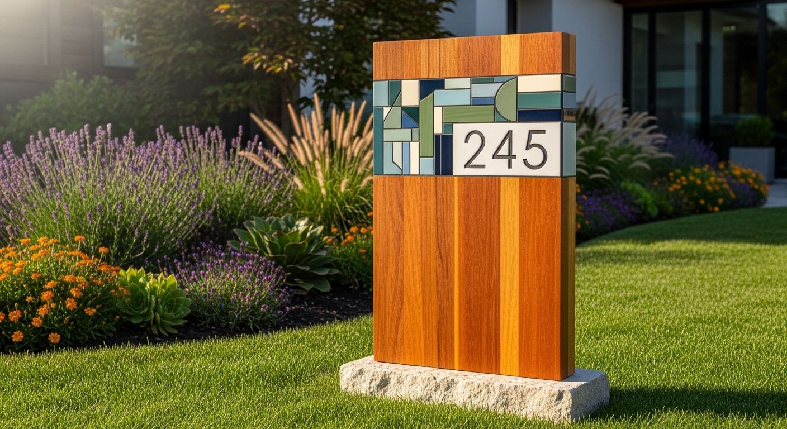
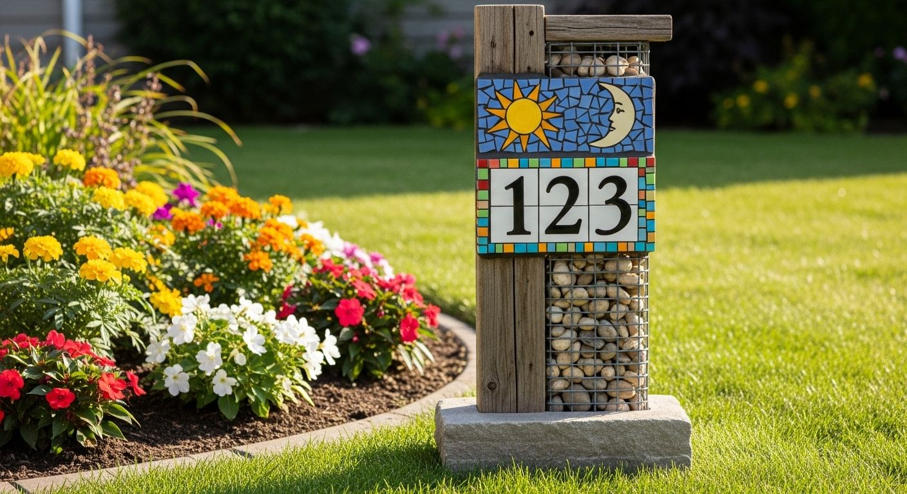
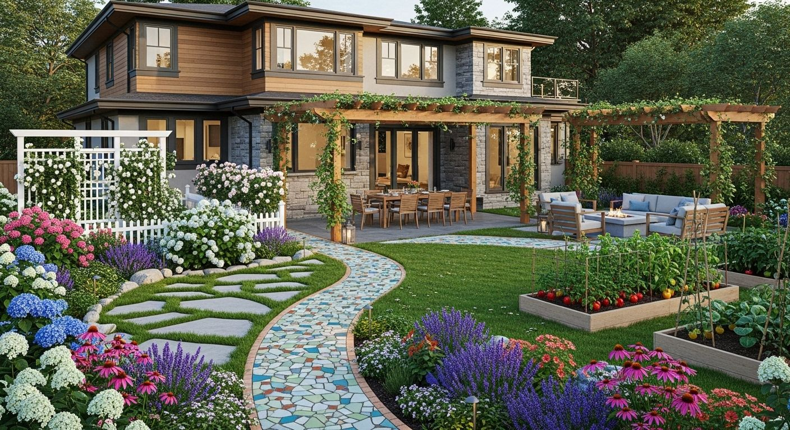
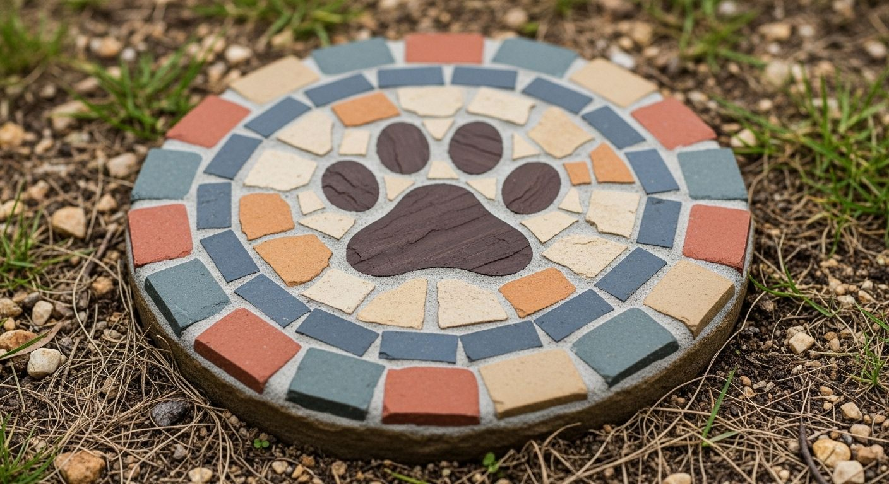
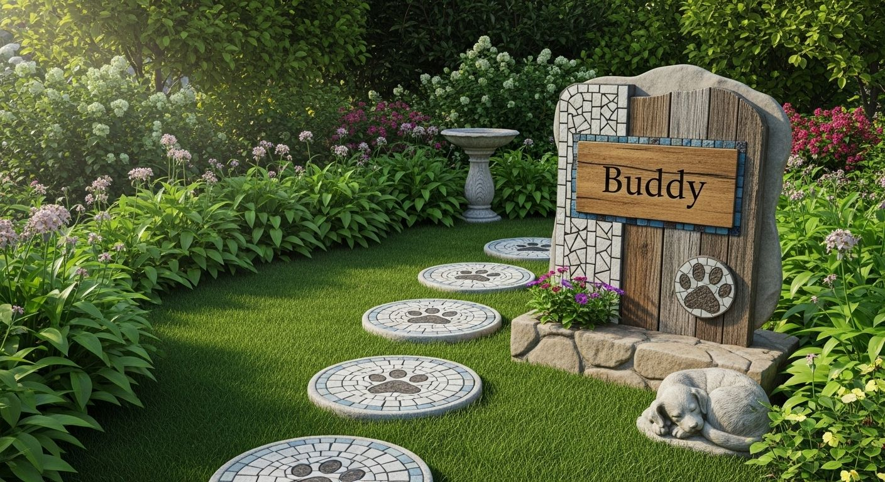
Walkways and entrance features designed to bring artistry, movement, and stronger curb appeal into the landscape.
Address markers designed to feel more custom and memorable than standard builder-grade signage.
Feature pieces that help a backyard or front yard feel more curated, artistic, and personal.
This category highlights one of the most meaningful parts of the studio — remembrance pieces created with warmth and care.
This section gives pet memorial work its own spotlight, which helps visitors understand that it is not just another product category, but a deeply personal custom offering.
This section is written to help visitors understand not only what you make, but why your work feels different from standard landscaping or off-the-shelf outdoor decor.
MC Mosaic Studio is positioned as a custom creative outdoor brand rather than a generic contractor site. The focus is on pieces that feel personal to the home, the garden, and the people who live there.
From mosaic pathways and lawn address signs to pet memorial stepping stones and feature pieces, the goal is to create work that adds identity, warmth, and a sense of permanence to outdoor spaces.
Instead of blending into the background, these pieces are meant to become part of the character of the property — whether that means improving curb appeal, creating a memorable garden path, or building a quiet place of remembrance.
Work designed to feel unique to the home instead of looking mass-produced.
Features that bring texture, color, and visual focus into the landscape.
Especially suited for memorial work and one-of-a-kind commissions.
A cleaner, more design-led alternative to standard contractor-style details.
These categories help visitors quickly understand the range of custom work available.
This homepage is written around local search themes such as:
Send a photo of the space, basic dimensions, and the style you are hoping to create.
The layout, materials, and overall look are guided by the home, garden, and project goals.
Each piece is made to feel custom, memorable, and visually integrated with the property.
The final result is meant to improve curb appeal, atmosphere, and long-term visual identity.
This section reduces hesitation and helps visitors understand how custom work usually begins.
No. A few photos of the space, rough dimensions, and your general idea are enough to start the conversation.
Yes. Color, shape, material direction, and overall character can all be guided by the property and the feeling you want to create.
Yes. Memorial projects are handled as more personal pieces, with extra attention to tone, symbolism, and emotional meaning.
Yes. Address signs, tribute stones, and select feature pieces can work as standalone commissions.
Whether you are planning a mosaic pathway, lawn address sign, memorial corner, or custom feature piece, the first step can be as simple as sharing a few photos and ideas.
Available for custom mosaic pathways, lawn address signs, pet memorial pieces, and select artistic outdoor projects in Coquitlam and Greater Vancouver.
MC Mosaic Studio is designed to feel different from a standard contractor site. The focus is on one-of-a-kind outdoor work that adds story, visual identity, and lasting character to the property.
This layout now combines local service messaging, portfolio structure, emotional storytelling, and direct inquiry options in a way that feels much closer to a real premium small-business website.